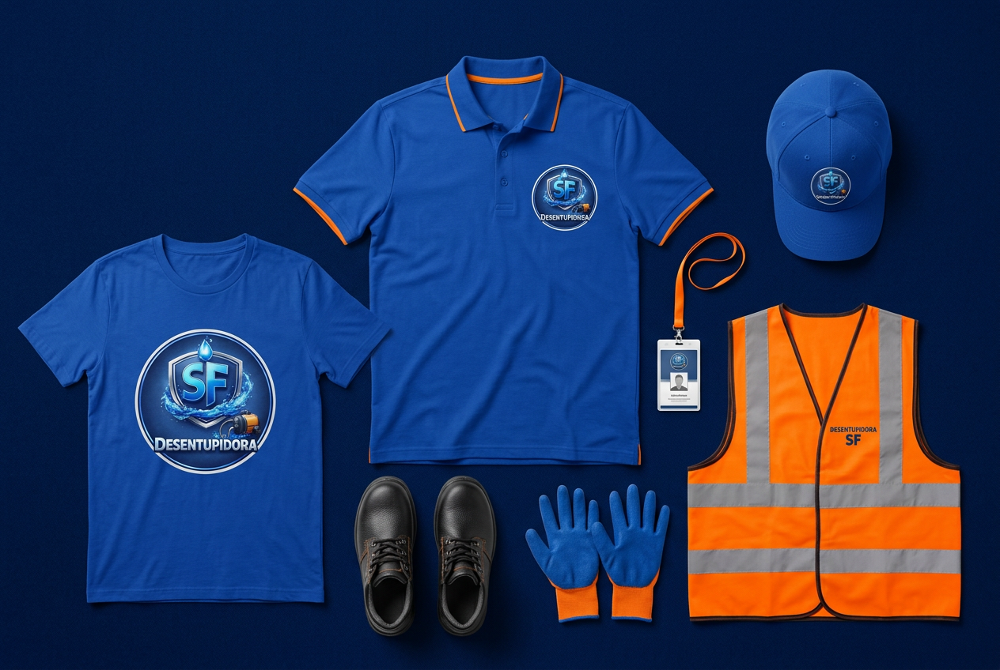
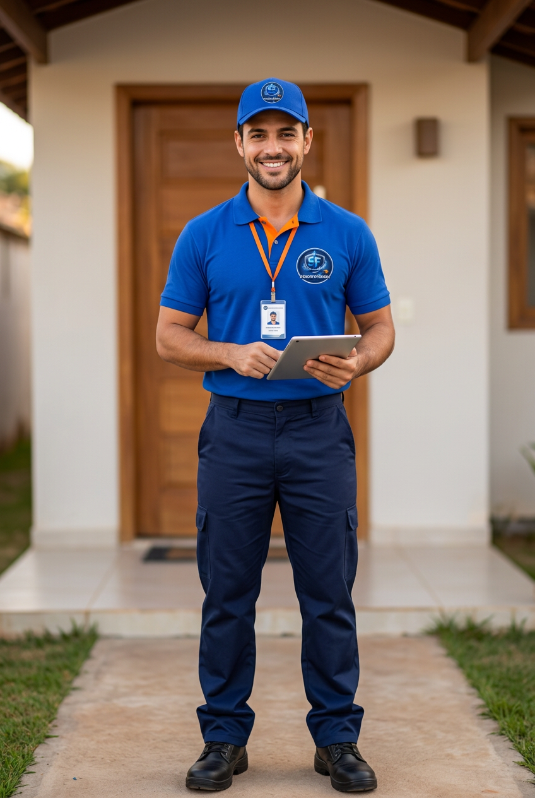
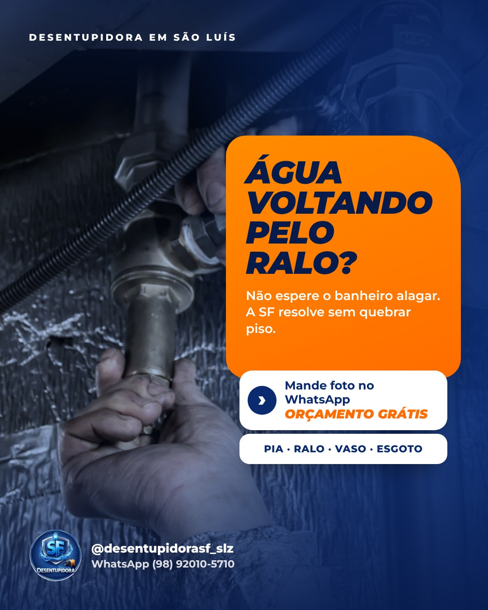

Manual de identidade visual · 2026
Desentupidora
SF
Logo, cores, tipografia, fardamento completo, frota e aplicações.
Logo, cores, tipografia, fardamento completo, frota e aplicações.
Sem quebra-quebra.
Teste na hora.
Orçamento grátis.
Tom de voz: direto, calmo, de quem resolve. Frases curtas, linguagem de WhatsApp, nada de jargão.
O logo original do cliente é mantido como está. Escudo, água e a máquina de cabo rotativo contam o serviço em um só selo.
Área de proteção: 1/4 do diâmetro
Sobre fundo escuro: borda branca
Tamanho mínimo
Impresso 2,5 cm · Tela 120 px
Não distorcer, não recolorir, não tirar o círculo, não colocar sombra nova.
Desentupidora
SF
Desentupidora
SF
Desentupidora SF
Versão só texto: costas da farda, veículo, rodapé.
@desentupidorasf_slz
(98) 92010-5710
Marinho
#061A4A · RGB 6 26 74
Fundos, textos, colarinho
Azul royal
#1D5FD0 · RGB 29 95 208
Cor da farda e da frota
Laranja
#FF8A00
Peito da farda, chamadas
Marinho 2
#0A2A6E
Céu
#3FA9FF
Branco azulado
#F4F8FF
Proporção: 60% azuis · 25% branco · 15% laranja. O laranja é o destaque: chamada, número, peito da farda.
Títulos · Black Italic · caixa alta
Entupiu?
A SF resolve.
Textos · Bold
Mande uma foto no WhatsApp. O técnico chega uniformizado, usa máquina de cabo rotativo e testa na hora.
Aa Bb Cc 0123456789 · ç ã é ô
A faixa diagonal laranja (o "fluxo") vem do flyer do cliente e aparece na farda, na frota e nas artes. Os selos repetem só as promessas reais.


É aqui que a persona decide se confia. Regras do técnico em visita:


Base azul royal, faixa laranja diagonal, logo grande na porta, nome e WhatsApp legíveis a 20 metros.
Desentupidora SF
Sem quebra-quebra · Teste na hora
Orçamento grátis
(98) 92010-5710
@desentupidorasf_slz
desentupidorasf.pages.dev
Nome do técnico
Técnico de desentupimento

Foto de perfil
Logo com anel laranja. Assinatura fixa nas artes: logo + @ + WhatsApp no rodapé.
KickCharge (EUA)
Rebrand My Professional Plumber: frota como outdoor, nome legível de longe. → padrão da van e da moto.
Jet Clean (Reino Unido)
Desentupidora de Londres posicionada como "a especialista". → promessa curta e técnica: sem quebra-quebra, teste na hora.
AquaMax (Canadá)
Identidade aplicada no uniforme como peça central. → macacão de duas cores com logo bordado.
Também vistas: Capital Plumbing (EUA), Shelby Plumbing (EUA), Fix It All (Behance), Drain-All/Baytek (Canadá), Flow 3 Drains (Reino Unido), Cleanovation (Reino Unido), Plumbing Perfectionists (Behance). Detalhes em TEMPLATE.md.